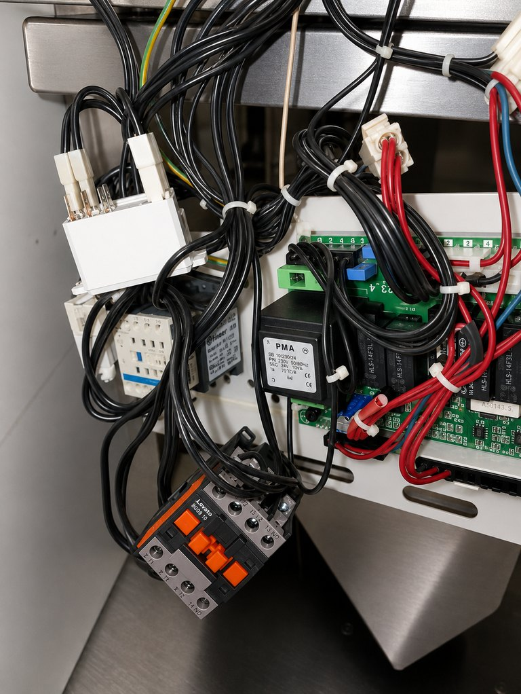

Код
Записывается полностью, включая префикс, ведущие нули и чередование экранов.
Только model-scoped расшифровки
Универсальной таблицы кодов не существует. Один и тот же номер у разных брендов и серий может обозначать разные неисправности, поэтому сначала фиксируют шильдик и документ.
Электронная диагностика
Значение кода сверяют только с руководством конкретной серии, после чего подтверждают состояние датчика, цепи или исполнительного узла измерениями.

Изображения обработаны для повышения наглядности. Мелкая геометрия, маркировка и взаимное положение небольших деталей могут отличаться от исходных фотографий; для измерений, электрических подключений и дефектовки используют фактический осмотр и документацию конкретной модели.
Технический контекст
На странице публикуются только записи, для которых указан производитель, область моделей и официальный источник. Неоднозначные строки из руководств исключаются до получения уточнённой редакции.
Даже точная расшифровка не доказывает неисправность конкретной детали: код может отражать обрыв датчика, плохой контакт, отсутствие условия или сбой обмена.
Записывается полностью, включая префикс, ведущие нули и чередование экранов.
Фото шильдика обязательно для определения серии и редакции руководства.
Используется руководство производителя, а не универсальная таблица из интернета.
Выполняется процедура для конкретного кода и модели.
Порядок проверки
Сфотографировать шильдик и весь экран с кодом.
Записать этап появления: включение, нагрев, мойка, ополаскивание или слив.
Не подставлять значение кода от другого бренда или похожей серии.
После одного штатного сброса не повторять запуск, если ошибка возвращается.
Матрица диагностики
| Контур или узел | Проявление | Что проверяется |
|---|---|---|
| Датчики температуры | Коды обрыва, короткого замыкания или неверного сигнала | Сопротивление, соединения и соответствие датчика |
| Нагрев | Код появляется при ожидании температуры | ТЭН, контактор, защита и датчик |
| Наполнение | Ошибка уровня или слишком долгого набора | Вода, клапан, давление и контроль уровня |
| Утечка | Срабатывает контроль воды в поддоне | Источник течи и датчик защиты |
| Связь модулей | Коммуникационная ошибка при запуске или работе | Питание, кабели и обмен между платами |
Когда остановить эксплуатацию
Проверенные записи
| Производитель | Серия или документ | Код | Официальное значение |
|---|---|---|---|
| Electrolux Professional | PM00483 V5 undercounter dishwasher document scope | Er-001 | Faulty rinsing temperature sensor 1 (R1) |
| Electrolux Professional | PM00483 V5 undercounter dishwasher document scope | Er-011 | Faulty heating of rinsing |
| Electrolux Professional | PM00483 V5 undercounter dishwasher document scope | Er-040 | Faulty initialized communication |
| Electrolux Professional | PM00483 V5 undercounter dishwasher document scope | Er-041 | Faulty ON-state communication |
| MEIKO | DV 80.2 | Info 120 | Tank is not heating OR fresh water is not entering unit |
| MEIKO | DV 80.2 | Info 121 | Door is not closed OR door switch is defective |
| MEIKO | DV 80.2 | Err 111 | Water leakage onto floor pan |
| MEIKO | DV 80.2 | Err 201 | Correct water level was not reached during initial filling |
| MEIKO | DV 80.2 | Err 202 | Filling process takes too long |
Связанные страницы
Заявка на диагностику
Чем точнее указаны модель, код и момент остановки цикла, тем быстрее можно подготовить диагностический сценарий.
8 (999) 005-71-72Устройство, коды и процедуры применяются только в пределах указанных серий и моделей.
FAQ
Системы обозначений отличаются между производителями и даже сериями одного бренда.
Нет. Он указывает на обнаруженное контроллером состояние; причину подтверждают проверкой цепи и узла.
Не использовать случайную расшифровку. Передать производителю или сервисному инженеру модель, серийный номер и фото дисплея.